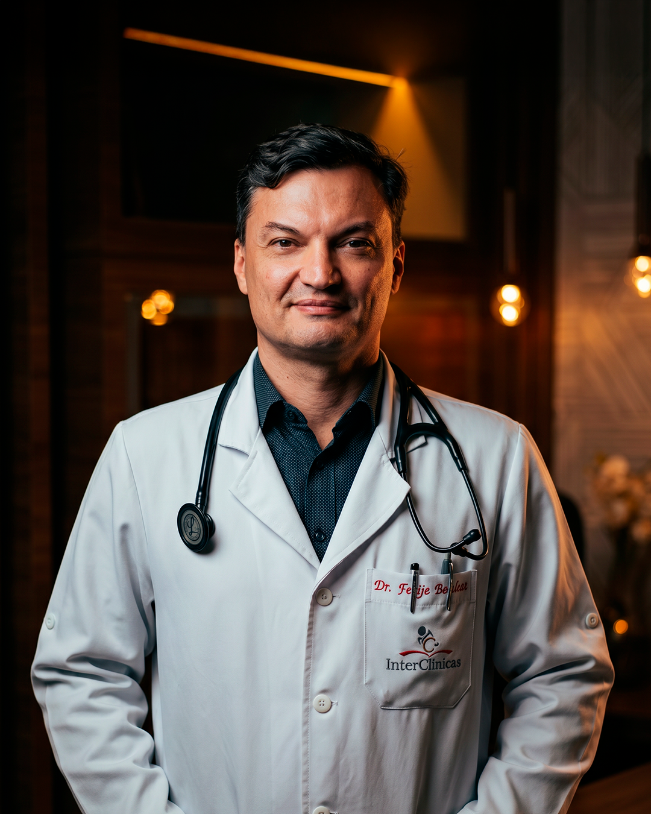

Você dorme a noite toda e acorda destruído? O problema não é você — é o seu sono.
O Curso Reset do Sono, criado por um pneumologista especialista, te ensina a voltar a ter noites que realmente restauram — sem remédio, em casa, com o Método DERAA: os 5 pilares que o Dr. aplica no consultório.
🔒 Acesso imediato · Garantia de 7 dias · Compra segura
Dr. Felipe Benthien · Pneumologista · CRM 10.890 · RQE 4.650

Você já gastou com paliativos. Faltou o método.
Melatonina de farmácia (ciclos repetidos) — R$ 90–240 · alivia o sintoma, não a causa.
Apps de meditação e sono — R$ 50–150/ano · superficial, sem protocolo médico.
Cursos e conteúdos genéricos online — R$ 100–400 · sem base clínica especializada.
Suplementos e kits de sono — R$ 150–300 · efeito temporário, sem sequência.
O que faltou não foi esforço — foi a sequência certa, com base clínica. É isso que o curso entrega.
Não é mais uma lista de dicas
Fisiologia real, não comportamento genérico. Parte de como o sistema do sono realmente funciona — ciclos, hormônios, vias respiratórias.
Criado por quem trata sono todos os dias. Estruturado a partir do que funciona no consultório — não para vender.
Sequência médica, não lista aleatória. Cada módulo constrói sobre o anterior, com a lógica de diagnóstico progressivo.
Cobre o espectro completo do sono. Insônia, ronco, apneia, cansaço crônico e sono não restaurador — porque o sono é um sistema.
O que você vai aprender
O que realmente acontece quando você dorme — fases, arquitetura e ciclos. Você entende, pela primeira vez, o que está acontecendo no seu corpo.
Higiene do sono além do óbvio: rotina, luz e telas, e os três sabotadores que a maioria ignora — café, jantar pesado e tela à noite.
O módulo que diferencia o Reset de qualquer outro curso. Prótese oral, CPAP, polissonografia — o que funciona, quando tratar e quando buscar um especialista.
Insônia, remédios para dormir, hormônios, libido, desempenho físico e mental, imunidade — tudo conectado ao sono.
Seu plano prático personalizado, quando buscar ajuda presencial e como manter o sono restaurador a longo prazo.
Tudo que você precisa para resetar seu sono
- ✓Curso Reset do Sono completo — 19 aulas em 5 módulos
- ✓Acesso vitalício — assista no seu ritmo, quantas vezes quiser
- ✓Módulo exclusivo sobre ronco e apneia
- ✓Plano prático para aplicar imediatamente
- ✓Garantia incondicional de 7 dias
🎁 Bônus exclusivos — hoje grátis (+R$118)
- 🎁Plano Reset: 7 Noites — guia de início rápido (R$47)
- 🎁Diário do Sono completo (R$27)
- 🎁Checklist: Quarto Ideal pra Dormir (R$17)
- 🎁Cards de Ação DERAA (5 pilares) (R$27)
ou 12x de R$ 9,94 · acesso imediato e vitalício
Quero resetar meu sono agora →🔒 Compra 100% segura · Garantia de 7 dias · Acesso imediato após confirmação
7 dias de garantia incondicional.
Comece o curso. Se sentir que não era pra você, é só enviar uma mensagem e devolvemos 100% — sem formulário, sem justificativa.
Perguntas frequentes
O curso tem um módulo dedicado a ronco e apneia — para você entender o que está acontecendo e o que realmente funciona. Mas ronco e apneia exigem avaliação presencial e, muitas vezes, exame (polissonografia). O curso te prepara para reconhecer os sinais e buscar a avaliação certa — ele não substitui o diagnóstico.
Não. O curso é educativo e pode ser feito por qualquer adulto que queira melhorar o sono. Se houver suspeita de um distúrbio, como apneia, o próprio conteúdo te orienta a procurar avaliação.
Muitos alunos relatam dormir melhor já na primeira semana de aplicação. O sono é individual — o protocolo te dá a sequência para construir noites mais restauradoras no seu ritmo.
Não. O Reset do Sono é educação e suporte — ensina o método que o Dr. Felipe aplica no consultório. Ele não substitui consulta, avaliação ou exame. Quando o seu caso exigir acompanhamento presencial, o curso te ajuda a perceber isso.
Não. O acesso é vitalício — assista no seu ritmo, quantas vezes quiser.
Você tem 7 dias de garantia incondicional. Se sentir que não era pra você, é só enviar uma mensagem e devolvemos 100% — sem formulário, sem justificativa.